Правки
Правки по практической работе 3.1
Средняя стоимость туров через aggregate:
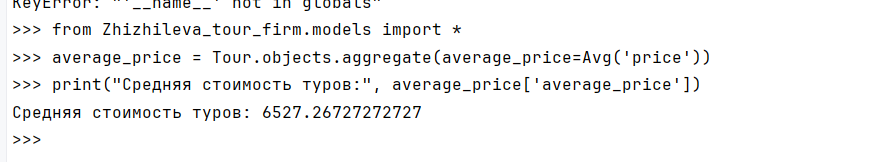
Вывод бронирований пользователя: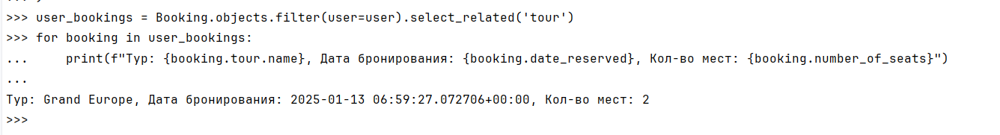
Вывод всех туров и их бронирований: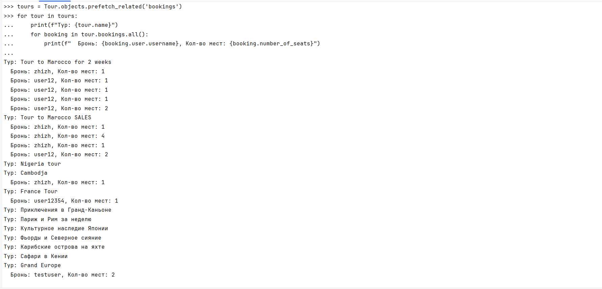
Общее количество бронирований у пользователя: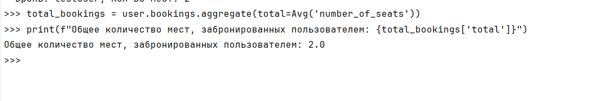
Правки по лабораторной работе 3.
Реализация баланса пользователя:
Вношу изменения в модель Customer, добавляю баланс:
class Customer(models.Model):
customer_id = models.AutoField(primary_key=True)
name = models.CharField(max_length=255)
phone = models.CharField(max_length=20, unique=True)
email = models.EmailField(unique=True)
address = models.TextField(blank=True, null=True)
balance = models.DecimalField(max_digits=10, decimal_places=2, default=0.0) # Новый атрибут
def __str__(self):
return self.name
Редактирую представление и делаю проверку на баланс:
class OrderViewSet(viewsets.ModelViewSet):
queryset = Order.objects.all()
serializer_class = OrderSerializer
def create(self, request, *args, **kwargs):
customer_id = request.data.get('customer')
total_cost = request.data.get('total_cost')
try:
customer = Customer.objects.get(id=customer_id)
except Customer.DoesNotExist:
raise ValidationError({"detail": "Customer not found."})
# Проверка баланса
if customer.balance < float(total_cost):
raise ValidationError({"detail": "Insufficient balance to place the order."})
# Если проверка пройдена, уменьшаем баланс клиента
customer.balance -= float(total_cost)
customer.save(update_fields=['balance'])
# Создаем заказ
return super().create(request, *args, **kwargs)
У пользователя было 10 тысяч, делаем заказ на 9 тысяч.
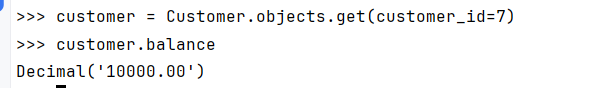
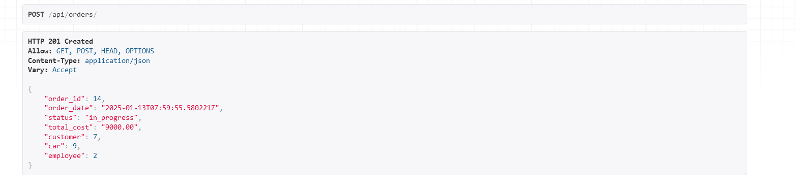
Проверяем баланс: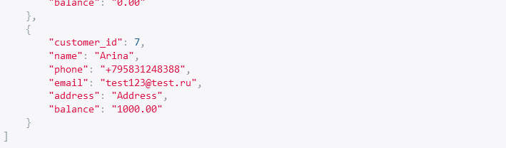
Попробуем создать заказ, превыщающий наш баланс: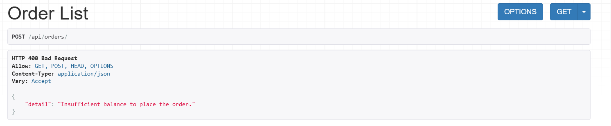
Аналитические задачи:
Средняя стоимость услуги:
class AverageServiceCostView(APIView):
permission_classes = [AllowAny]
def get(self, request):
average_cost = OrderDetails.objects.aggregate(average_price=Avg('cost'))['average_price']
return Response({
"average_service_cost": average_cost
})
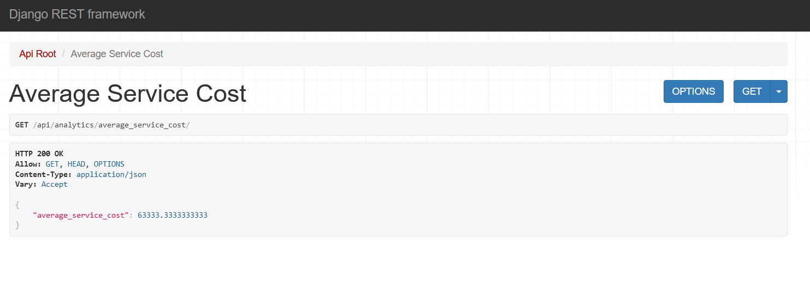
Топ клиенты по сумме заказа:
class TopCustomersView(APIView):
permission_classes = [AllowAny]
def get(self, request):
customers = Customer.objects.annotate(total_spent=Sum('orders__total_cost')) \
.order_by('-total_spent')[:10] # Топ-10
data = [
{
"customer_id": customer.customer_id,
"name": customer.name,
"total_spent": customer.total_spent
}
for customer in customers
]
return Response({"top_customers": data})
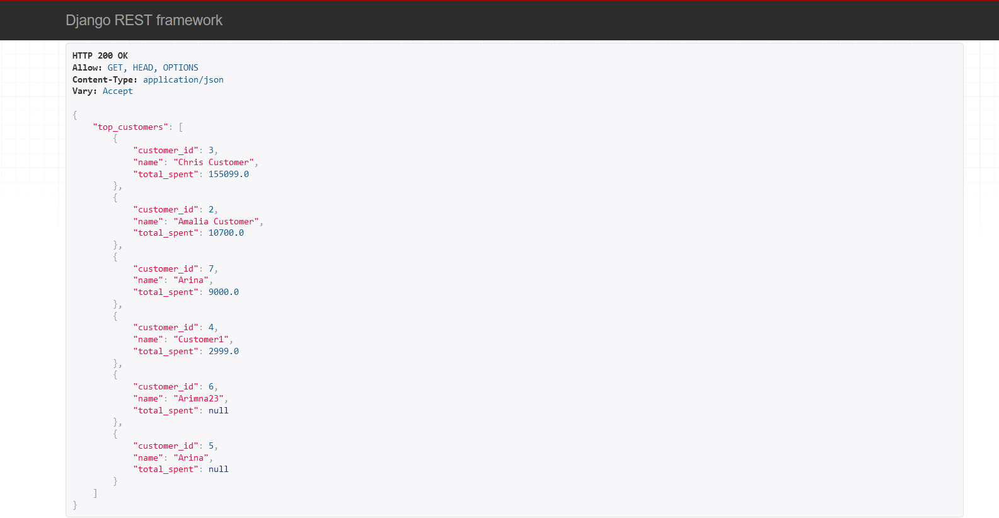
Практическая работа 3.1
Ход работы
python manage.py shell
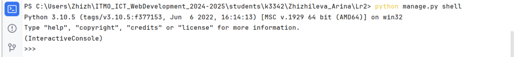
Смотрим турагенства
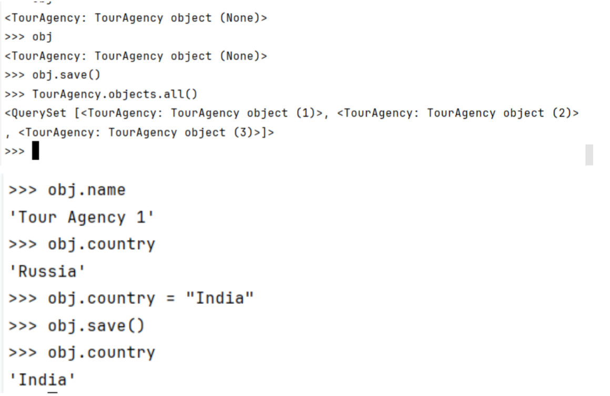
Создаем новые агенства
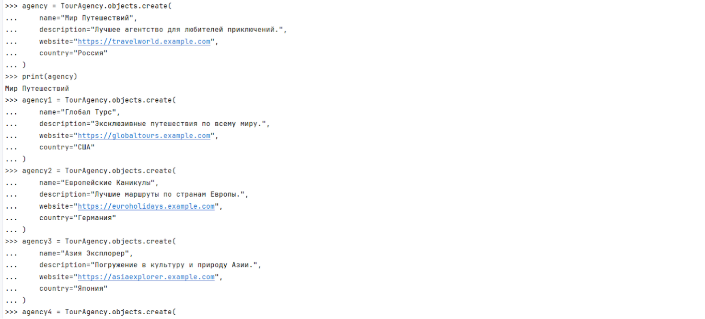
Смотрим список агенства

Создаем новые туры

Создаем новые отзывы

Задача 2. Создание простых запросов
1.Выведете все туры агенства Hot Sales Agency (agency [1])

2.Выведите все туры где в названии есть слово "тур"
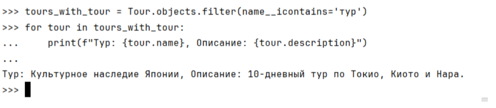
3.Взяв любого случайного юзера получить его id, и по этому id получить экземпляр ревью в виде объекта модели (можно в 2 запроса)
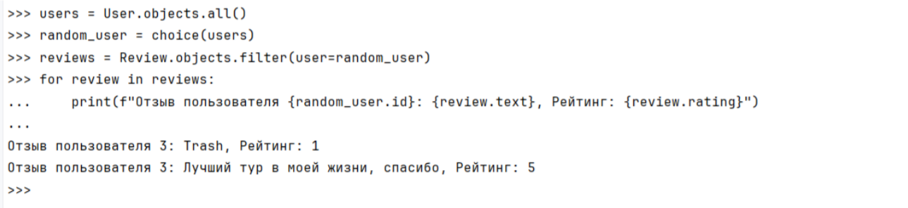
4.Вывести всех юзеров у которых есть отзыв на тур Cambodja (tour [3])
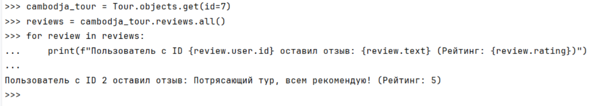
5.Найти все туры, чей год начала начинается с 2025
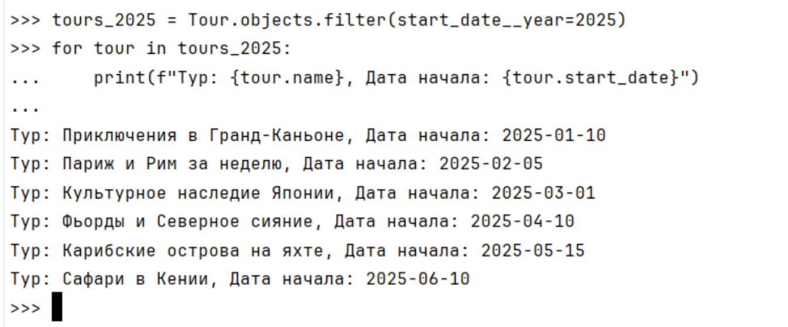
Задача 3. Агрегация и аннотация запросов
1. Вывод даты начала самого старого тура.
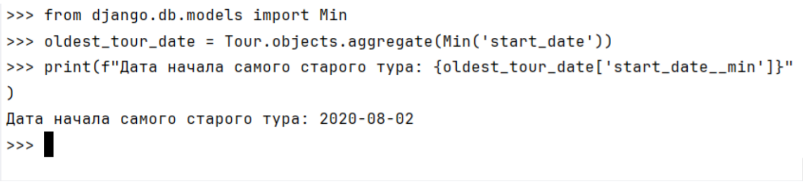
2. Укажите самую позднюю дату бронирования имеющую какую-то из существующих моделей в вашей базе
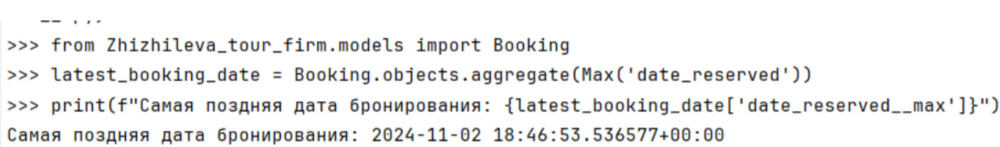
3. Выведите количество туров для каждого агентства
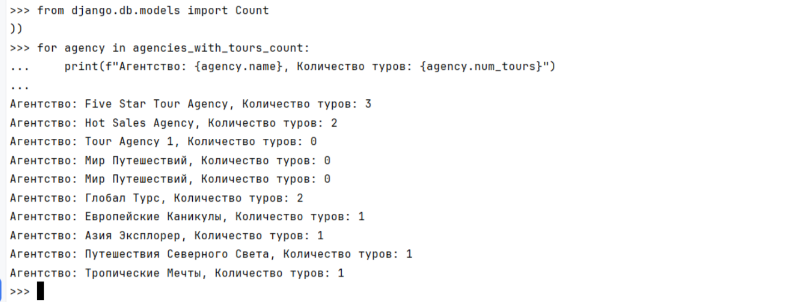
4. Подсчитайте количество туров с рейтингов 5
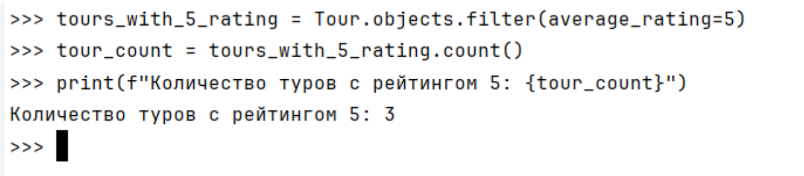
5.Отсортируйте всех юзеров по дате бронирования (Примечание: чтобы не выводить несколько раз одни и те же таблицы воспользуйтесь методом .distinct()
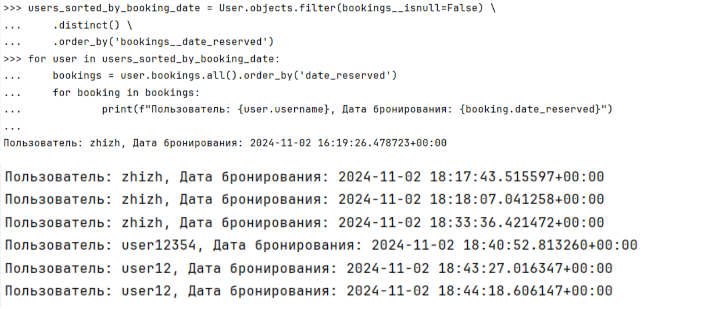
# Практическое задание
Реализовать ендпоинты для добавления и просмотра скилов методом, описанным в пункте выше.
class SkillListView(APIView):
"""
Представление для получения всех умений
"""
def get(self, request):
skills = Skill.objects.all()
serializer = SkillSerializer(skills, many=True)
return Response({"skills": serializer.data})
class SkillCreateView(APIView):
"""
Представление для создания нового умения
"""
def post(self, request):
skill_data = request.data.get("skill")
serializer = SkillSerializer(data=skill_data)
if serializer.is_valid(raise_exception=True):
skill_saved = serializer.save()
return Response(
{"success": f"Skill '{skill_saved.title}' created successfully."},
status=status.HTTP_201_CREATED
)
return Response(
{"error": "Skill creation failed."},
status=status.HTTP_400_BAD_REQUEST
)
 { "profession": { "title": "Warrior", "description": "A brave and skilled fighter." } }
{ "profession": { "title": "Warrior", "description": "A brave and skilled fighter." } }

Эндпоинты для добавления и просмотра скиллов.
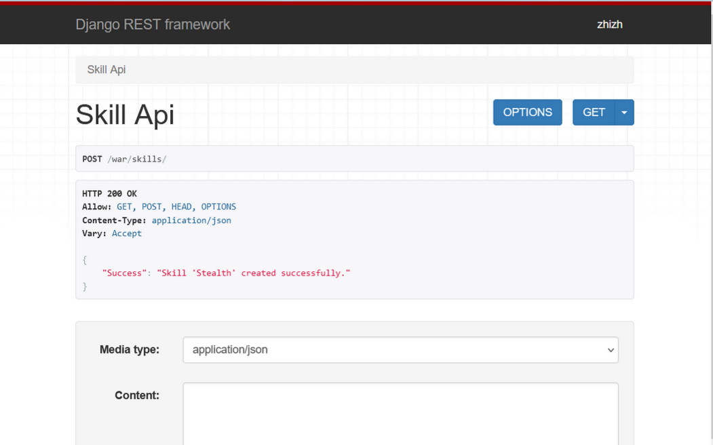
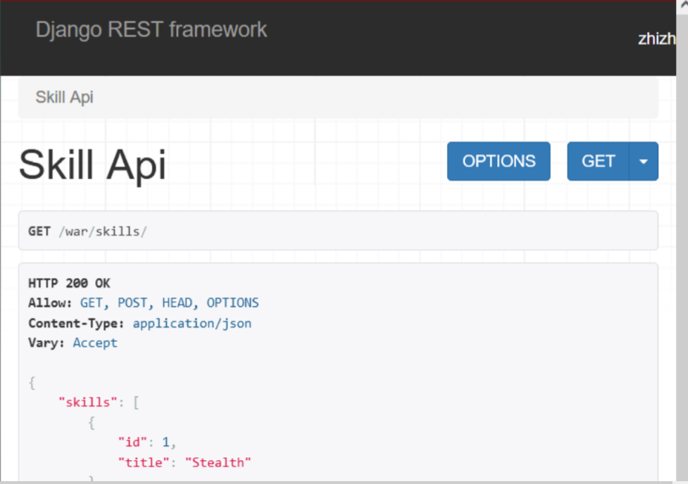